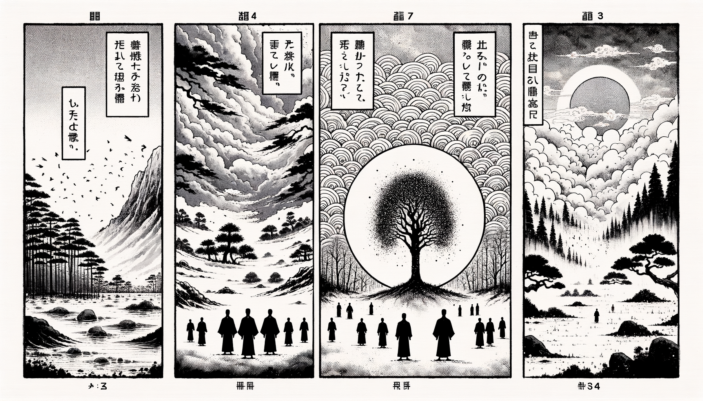

十二巻 巻一覧
正法眼藏第2 受戒
本ページの導入・語彙・深掘り・クイズは tools/regen_volume_intro_from_corpus.py が OpenAI API で生成したものです（入力は当巻冒頭原文の抜粋）。内容はモデル出力のため、重要箇所は必ず原文・教本と照合してください。
出典: https://shomonji.or.jp/zazen/doc/genzou.html
（ローカル生成の全文: 全文ページ）
この巻の位置（導入）
禪苑淸規に云く、三世諸佛、皆な出家成道と曰ふ。
西天二十八祖、唐土六祖、佛心印を傳ふる、盡く是れ沙門なり。
語彙の足場
- 受戒：仏教において戒律を受けること。これは修行者が仏の教えに従い、道を歩むための重要な儀式である。
- 戒律：仏教徒が守るべき規則や道徳的な指針。戒律は、修行者が心を清め、正しい行いをするために必要とされる。
- 沙門：仏教における出家者のこと。修行を通じて悟りを目指す者を指す。
- 菩薩戒：菩薩としての行動を規定する戒律。これは他者を助けることを目的とした戒律である。
- 三聚淸淨戒：仏教における三つの清浄な戒律のこと。これにより、修行者は心を清め、正しい行動を促進する。
本文（冒頭・抜粋）
出典はリポジトリ内 doc/正法眼蔵.txt です。原文の参照元: https://shomonji.or.jp/zazen/doc/genzou.html
禪苑淸規云、三世諸佛、皆曰出家成道。西天二十八祖、唐土六祖、傳佛心印、盡是沙門。蓋以嚴淨毘尼、方能洪範三界。然則參禪問道、戒律爲先。既非離過防非、何以成佛作祖（禪苑淸規に云く、三世諸佛、皆な出家成道と曰ふ。西天二十八祖、唐土六祖、佛心印を傳ふる、盡く是れ沙門なり。蓋し以て毘尼を嚴淨して方に能く三界に洪範たり。然あれば則ち參禪問道は戒律爲先なり。既に過を離れ非を防ぐに非ずは、何を以てか成佛作祖せん）。
受戒之法、應備三衣鉢具并新淨衣物。如無新衣、浣洗令淨。入壇受戒、不得借賃衣鉢。一心專注、愼勿異緣。像佛形儀、具佛戒律、得佛受用、此非小事。豈可輕心。若借賃衣鉢、雖登壇受戒、竝不得戒。若不曾受、一生爲無戒之人。濫廁空門、虛消信施。初心入道、法律未諳、師匠不言、陷人於此。今茲苦口、敢望銘心（受戒の法は、應に三衣鉢具并びに新淨の衣物を備ふべし。新衣無きが如きは、浣洗して淨からしむべし。入壇受戒には、衣鉢を借賃すること得ざれ。一心專注して、愼んで異緣あること勿れ。佛の形儀に像り、佛の戒律を具す、佛受用を得る、此れ小事に非ず。豈に輕心なるべけんや。若し衣鉢を借賃せば、登壇受戒すと雖も、竝びに得戒せず。若し曾受せずは、一生無戒の人爲らん。濫りに空門に廁り、虛しく信施を消せん。初心の入道は、法律未だ諳んぜず、師匠言はずは、人を此に陷れん。今茲に苦口す、敢て望すらくは心に銘ずべし）。
既受聲聞戒、應受菩薩戒。此入法之漸也（既に聲聞戒を受くれば、應に菩薩戒を受くべし。此れ入法の漸なり）。
西天東地、佛祖相傳しきたれるところ、かならず入法の最初に受戒あり。戒をうけざればいまだ諸佛の弟子にあらず、祖師の兒孫にあらざるなり。離過防非を參禪問道とせるがゆゑなり。戒律爲先の言、すでにまさしく正法眼藏なり。成佛作祖、かならず正法眼藏を傳持するによりて、正法眼藏を正傳する祖師、かならず佛戒を受持するなり、佛戒を受持せざる佛祖あるべからざるなり。あるいは如來にしたがひたてまつりてこれを受持し、あるいは佛弟子にしたがひてこれを受持す、みなこれ命脈稟受するところなり。
いま佛佛祖祖正傳するところの佛戒、ただ嵩嶽曩祖まさしく傳來し、震旦五傳して曹谿高祖にいたれり。靑原、南嶽等の正傳、いまにつたはれりといへども、杜撰の長老等かつてしらざるもあり、もともあはれむべし。
いはゆる應受菩薩戒、此入法之漸也、これすなはち參學のしるべきところなり。その應受菩薩戒の儀、ひさしく佛祖の堂奥に參學するもの、かならず正傳す。疎怠のともがらのうるところにあらず。
その儀は、かならず祖師を燒香禮拜し、應受菩薩戒を求請するなり。すでに聽許せられて、沐浴淸淨にして新淨の衣服を著し、あるいは衣服を浣洗して、花を散じ、香をたき、禮拜恭敬してその身に著す。あまねく形像を禮拜し、三寶を禮拜し、尊宿を禮拜し、諸障を除去し、身心淸淨なることをうべし。その儀ひさしく佛祖の堂奥に正傳せり。
そののち、道場にして和尚、阿闍梨、まさに受者ををしへて禮拜し、長跪せしめて合掌し、この語をなさしむ。
歸依佛、歸依法、歸依僧。
歸依佛陀兩足中尊、歸依達磨離欲中尊、歸依僧伽衆中尊。
歸依佛竟、歸依法竟、歸依僧竟。
如來至眞無上正等覺是我大師。我今歸依、從今已後、更不歸依邪魔外道。慈愍故。［三説。第三疊慈愍故三遍］（如來至眞無上正等覺は是れ我が大師なり。我れ今歸依したてまつる、今より已後、更に邪魔外道に歸依せじ。慈愍したまふが故に。［三説。第三には慈愍故三遍を疊す］）
善男子、既捨邪歸正、戒已周圓。應受三聚淸淨戒（善男子、既に邪を捨し正に歸して、戒已に周圓せり。應に三聚淸淨戒を受くべし）。
第一、攝律儀戒。汝從今身至佛身、此戒能持否（汝、今身より佛身に至るまで、此の戒能く持つや否や）。
答云、能持。［三問三答］
第二、攝善法戒。汝從今身至佛身、此戒能持否（汝、今身より佛身に至るまで、此の戒能く持つや否や）。
答云、能持。［三問三答］
第三、饒益衆生戒。汝從今身至佛身、此戒能持否（汝、今身より佛身に至るまで、此の戒能く持つや否や）。
答云、能持。［三問三答］
上來三聚淸淨戒、一一不得犯。汝從今身至佛身、能持否（上來三聚の淸淨戒、一一犯すること得ざれ。汝、今身より佛身に至るまで、能く持つや否や）。
答云、能持。［三問三答］
是事如是持（是の事、是の如く持すべし）。
受者禮三拜、長跪合掌。
善男子、汝既受三聚淸淨戒、應受十戒。是乃諸佛菩薩淸淨大戒也（善男子、汝、既に三聚淸淨戒を受けたり、應に十戒を受くべし。是れ乃ち諸佛菩薩淸淨大戒也）。
第一、不殺生。汝從今身至佛身、此戒能持否（汝、今身より佛身に至るまで、此の戒能く持つや否や）。
答云、能持。［三問三答］
第二、不偸盗。汝從今身至佛身、此戒能持否（汝、今身より佛身に至るまで、此の戒能く持つや否や）。
答云、能持。［三問三答］
第三、不貪婬。汝從今身至佛身、此戒能持否（汝、今身より佛身に至るまで、此の戒能く持つや否や）。
答云、能持。［三問三答］
第四、不妄語。汝從今身至佛身、此戒能持否（汝、今身より佛身に至るまで、此の戒能く持つや否や）。
答云、能持。［三問三答］
第五、不酤酒。汝從今身至佛身、此戒能持否（汝、今身より佛身に至るまで、此の戒能く持つや否や）。
答云、能持。［三問三答］
第六、不説在家出家菩薩罪過。汝從今身至佛身、此戒能持否（汝、今身より佛身に至るまで、此の戒能く持つや否や）。
答云、能持。［三問三答］
第七、不自讃毀他。汝從今身至佛身、此戒能持否（汝、今身より佛身に至るまで、此の戒能く持つや否や）。
答云、能持。［三問三答］
第八、不慳法財。汝從今身至佛身、此戒能持否（汝、今身より佛身に至るまで、此の戒能く持つや否や）。
答云、能持。［三問三答］
第九、不瞋恚。汝從今身至佛身、此戒能持否（汝、今身より佛身に至るまで、此の戒能く持つや否や）。
答云、能持。［三問三答］
第十、不癡謗三寶。汝從今身至佛身、此戒能持否（汝、今身より佛身に至るまで、此の戒能く持つや否や）。
答云、能持。［三問三答］
上來十戒、一一不得犯。汝從今身至佛身、能持否（上來の十戒、一一犯すること得ざれ。汝、今身より佛身に至るまで、能く持つや否や）。
答云、能持。［三問三答］
是事如是持（是の事、是の如く持すべし）。
受者禮三拜。
上來三歸、三聚淨戒、十重禁戒、是諸佛之所受持。汝從今身至佛身、此十六支戒、能持否（上來の三歸、三聚淨戒、十重禁戒は、是れ諸佛の受持したまふ所なり。汝、今身より佛身に至るまで、此の十六支戒、能く持つや否や）。
答云、能持。［三問三答］
是事如是持（是の事、是の如く持すべし）。
受者禮三拜。
次作處世界梵訖云（次に處世界梵を作し訖つて云く）、
歸依佛、歸依法、歸依僧。
次受者出道場（次に受者、道場を出づ）。
この受戒の儀、かならず佛祖正傳せり。丹霞天然、藥山高沙彌等、おなじく受持しきたれり。比丘戒をうけざる祖師、かくのごとくあれども、この佛祖正傳菩薩戒うけざる祖師、いまだあらず。必ず受持するなり。
正法眼藏第二受戒
図解（4コマ・AI生成）
教義の根拠は本文・出典に従い、漫画は比喩の補助に留めてください。

深掘り（読解の手掛かり）
- 受戒は仏教の修行の出発点であり、戒律を守ることが求められる。
- 戒律を受けることで、修行者は仏の教えに従うことができる。
- 戒律を守らない場合、仏の弟子として認められないことがある。
- 菩薩戒は特に他者を助けることに焦点を当てている。
確認（形成評価）
各設問の下の「採点」で正誤を表示します（ブラウザ内のみ。ログは送りません）。